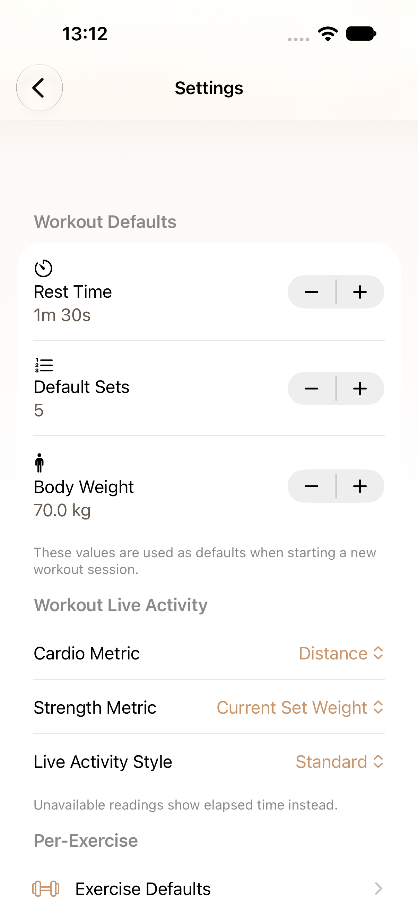
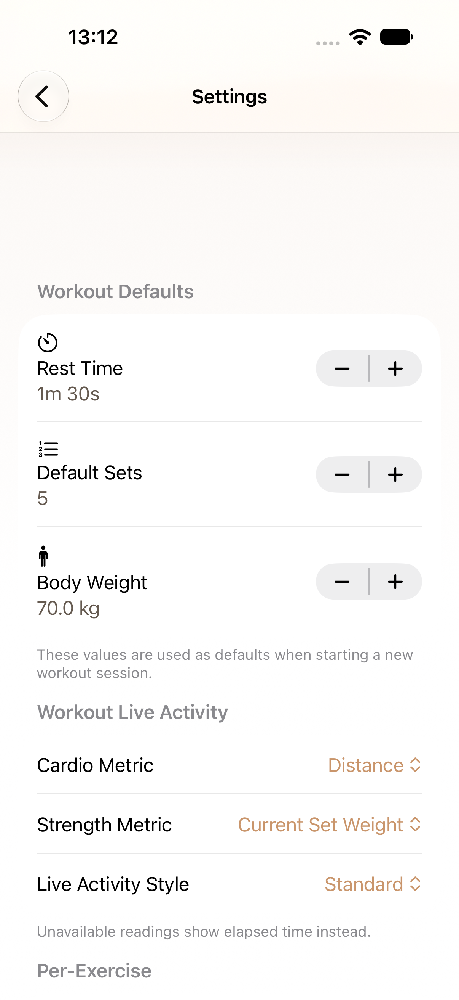

iPhone 새 원본 2장 · 독립 저장·재실행 UI 1건 통과 · source 5ef25439. 설정 소비 소스는 최종 구현에서도 동일하다.
WLA01 최종 Gold 시스템 화면은 테스트 진입 전 환경 응답 실패로 미검증이다. iPad·Duo Settings, Island·Small·StandBy는 미갱신이다.
크기·상태·Gold Impact 보존 시안 · 원본 출처

